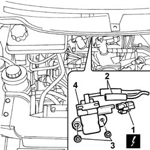
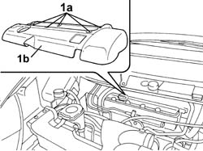
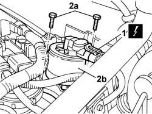

1080C24 E.G.R. SYSTEM SOLENOID - R + R
- Path
- Procedures > 10 ENGINE > 1080 EXHAUST EMISSION CONTROL SYSTEM > 1080C EXHAUST GAS RECIRCULATION SYSTEM (E.G.R.) > 1080C24 E.G.R. SYSTEM SOLENOID - R + R
- Kind
- repair procedure (removal / refitting; the operation number is the code)
- Applies to
- engines: 2.0 16v, 2.0 16V JTD, 2.2 16V JTD; all production periods
- Interactive page
- https://sloeber94.github.io/elrnDB-fUlss/en/#/179007123
Applies to: engines: 2.0 16V JTD; all production periods
 Removing
Removing
 Refitting
Refitting1. Disconnect the electrical connection.
2. Release the vacuum pipes.
3. Undo the retaining nuts.
4. Release and remove the solenoid valve.

Applies to: engines: 2.0 16V JTD; all production periods
Refitting
Removing- Place the solenoid valve in position and tighten the fixing nuts.
- Connect the vacuum pipes and the electrical connection.
Applies to: engines: 2.0 16v; all production periods
Removing
RefittingOp. 5530B56 BATTERY DRIP TRAY COVER - R.R.
- Disconnect the negative battery terminal.
Op. 5010B18 CLIMATE CONTROL UNIT AIR INTAKE - R.R.
1. Rotate the fastening pins (1a) through 90° and remove the coil cover (1b).

Applies to: engines: 2.0 16v; all production periods
1. Disconnect the electrical connection for the E.G.R. solenoid valve.
2. Undo the fixing bolts (2a) and remove the E.G.R. solenoid valve (2b).

Applies to: engines: 2.0 16v; all production periods
Refitting
Removing- Fit the E.G.R. system solenoid valve and tighten the fixing bolts.
- Connect the electrical connection for the E.G.R. solenoid valve.
- Fit the coil cover and rotate the fastening pins through 90° to secure it.
Op. 5010B18 CLIMATE CONTROL UNIT AIR INTAKE - R.R.
- Connect the negative battery terminal.
Applies to: engines: 2.2 16V JTD; all production periods
Removing
Refitting1. Disconnect the electrical connection.
2. Release the vacuum pipes.
3. Undo the retaining nuts.
4. Release and remove the solenoid valve.
Applies to: engines: 2.2 16V JTD; all production periods
Refitting
Removing- Place the solenoid valve in position and tighten the fixing nuts.
- Connect the vacuum pipes and the electrical connection.